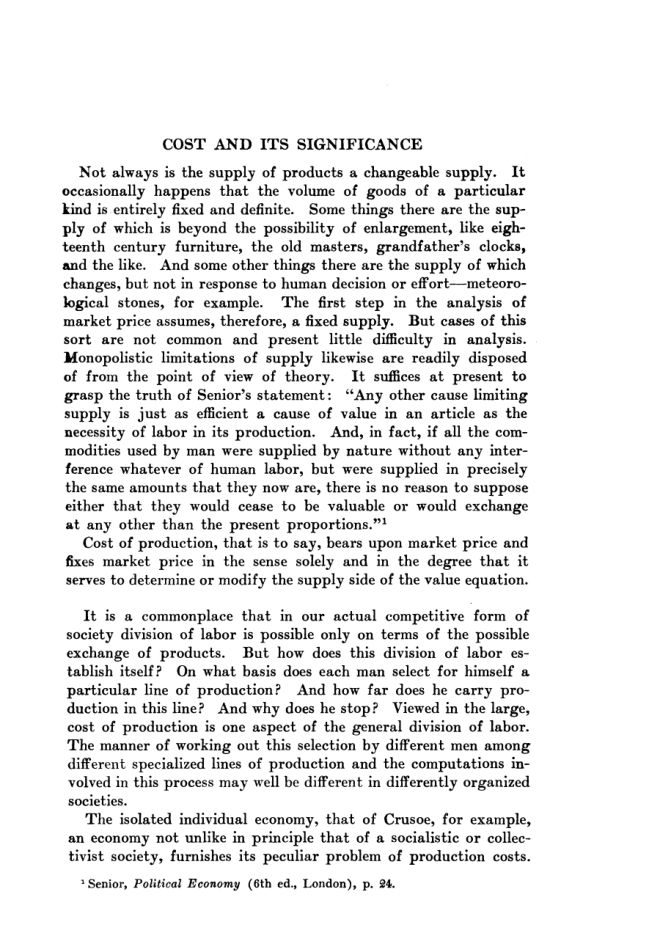

Davenport, 1911: o que custa, de fato, produzir?
Leitura: 8 min
Davenport mostra, com um carpinteiro, um fazendeiro e um chapeleiro, que o custo é sobretudo a alternativa sacrificada, e que a disputa entre utilidade e custo perde o sentido.


Uma criança ganhou uma pera e um pêssego. Um menino tenta tomá-los, e a única maneira de salvar um deles é largar a pera no mato e correr com o pêssego enquanto o agressor se abaixa. Quanto custou o pêssego? Foi um presente; num sentido, não custou nada. Mas só foi conservado ao preço da pera. É com cenas assim que H. J. Davenport, da University of Missouri, examina o que os economistas querem dizer com custo.
Alguns bens têm oferta fixa, como móveis do século XVIII ou quadros dos velhos mestres. Para os demais, o custo de produção influi no preço de mercado apenas na medida em que determina ou modifica a oferta. A pergunta de Davenport é de que é feito esse custo.
Quanto custa a caça de Crusoé?
Na economia isolada de Crusoé, que em princípio não difere de uma sociedade coletivista, nada seria racionalmente produzido se sua utilidade não compensasse o cansaço do trabalho e o lazer perdido, nem se deslocasse um produto mais desejável. Em certo momento a pesca é abandonada pela caça: a caça custou peixe. Davenport chama essa renúncia de custo de oportunidade, e admite que a palavra custo não é perfeita; deslocamento ou renúncia talvez fossem melhores.
Se um dia de trabalho rende um alqueire de trigo ou dois de milho e o trigo é escolhido, pode-se dizer que o trigo custou um dia de trabalho ou dois alqueires de milho. Como a escolha real foi entre trigo e milho, e não entre trigo e descanso, o custo relevante é o milho. O mesmo vale para a terra e as máquinas: uma vez existentes, seu custo está no melhor uso alternativo, e não no trabalho gasto para produzi-las.
Lucro é o que sobra acima do custo?
Para o produtor de mercado, Davenport usa contas simples. Um carpinteiro contrata a carpintaria de um prédio, trabalha seis meses e paga seus homens. Poderia ter trabalhado por dia. Seus gastos de subsistência no período são irrelevantes: lucros não deixam de ser lucros porque foram gastos.
Daí a distinção central: o lucro não é o excedente sobre o custo; divide-se em lucro necessário, que é parte do custo, e lucro desnecessário, um diferencial acima dele. É possível ter lucro absoluto e prejuízo relativo. A conta de um fazendeiro de trigo mostra o alcance da ideia: 23 itens, entre eles aluguel da terra, juros sobre cada desembolso até a venda, depreciação das máquinas e da terra, risco de seca e US$ 650 pelo tempo do próprio fazendeiro, avaliado pelo que ganharia na melhor alternativa. A safra foi vendida por US$ 3.000 e exigiu US$ 850 de desembolsos, mas custou US$ 3.140,25.
Se as condições se repetirem, ele reduzirá a produção de trigo. Custos passados não influem no preço presente, porque a oferta já é a que é. O custo que importa é o prospectivo, diante do preço prospectivo, e ele age porque sempre há produtores na margem, prontos a sair se as vantagens relativas caírem, e outros, em outras indústrias, prontos a entrar se subirem.
Quem está na margem?
Um fabricante vende chapéus a US$ 2 com lucro de 25 centavos por unidade; com o mesmo esforço e gasto, poderia fazer um par de sapatos vendido a US$ 1,90, com 15 centavos de lucro. Para ele, o custo do chapéu é US$ 1,90: dos 25 centavos, 15 são lucro necessário e 10, excedente. Se os chapéus caírem a US$ 1,90, ele estará na margem, ainda que lucre mais que qualquer concorrente. A marginalidade é questão de ganho relativo, de proximidade com a melhor alternativa, e não do tamanho absoluto do lucro.
Em geral, não é o negócio inteiro que está na margem, mas parte da produção. Preços em queda tendem a reduzir a produção, e não a eliminá-la: abandonam-se as terras piores, e em cada terra se cultiva menos intensamente. O fazendeiro de trigo tem, ao mesmo tempo, margens de aluguel, de salário, de milho deslocado, de desgaste da terra e até de compaixão com os animais, a mulher e os filhos. O custo, conclui, é a expressão em dinheiro do total de resistências à produção.
O preço depende da utilidade ou do custo?
Davenport retoma a velha disputa. A favor da demanda: sem desejos não haveria motivo para produzir. A favor da oferta: as coisas não têm preço proporcional à utilidade; somos mais ricos em chuvas do que em canais de irrigação, uma safra curta vale mais que uma farta, e se a água ou o ar passassem a ter preço a sociedade teria perdido, e não ganho. O valor parece medir antes a escassez que a utilidade.
“O valor só surge quando as coisas custam.” (“Value arises only when things cost.”)
Para Davenport, porém, a questão foi mal posta. O preço de reserva de quem vende já é uma expressão de demanda, e o custo do empresário, corretamente entendido, é sobretudo o apelo das oportunidades concorrentes: salários pagos em outras linhas, aluguéis obtidos em outros usos, juros que o capital renderia em outras empresas. O custo de uma coisa remete à demanda por outras.
“O custo, de fato, consiste principalmente em demandas que resistem.” (“Cost, indeed, consists mostly of resisting demands.”)
Por isso Davenport rejeita a doutrina do custo-trabalho, que atribui a Ricardo: preços relativos proporcionais às quantidades de trabalho, e salários proporcionais ao sacrifício de quem trabalha. O salário não é proporcional à dor do trabalho: a oferta de homens aptos só para tarefas penosas é grande, e esses salários são baixos, enquanto ocupações agradáveis são bem pagas; basta comparar a prima-dona com a empregada doméstica. E a explicação pelo custo do empresário é circular: explica o preço do produto pelo preço dos fatores e o preço dos fatores pelo do produto, como num verso em nota de rodapé sobre o porco caro, que come milho caro, plantado em terra cara.
Qual o papel do empresário?
A conta do empresário é superficial, mas real e indispensável. Numa sociedade de produção competitiva, é por meio dela que as causas últimas, os desejos humanos de um lado e a capacidade produtiva e o equipamento de outro, chegam aos preços. O empresário toma salários, aluguéis e juros como dados,; o economista precisa investigar suas causas. A sequência causal do lado da oferta vai da escassez do fator à escassez do produto, daí ao preço do produto e, por fim, à remuneração do fator.
O empresário é, assim, sobretudo um intermediário, que representa a demanda do público quando contrata e a escassez dos fatores quando calcula. Mas não é só efeito: suas escolhas alteram a situação que enfrenta. Para quem estranha uma coisa ser ao mesmo tempo efeito e, em parte, causa, Davenport propõe imaginar o último a pular numa jangada lotada que afunda.
“Ele afunda os outros ou os outros o afundam?” (“Does he sink the others or do they sink him?”)
Na minha leitura
Na minha leitura, o artigo vale menos pelo nome que dá à ideia do que pela disciplina contábil que Davenport impõe a ela. A conta do fazendeiro, com juros sobre cada desembolso e o tempo do dono avaliado pela melhor alternativa, é um exercício que ainda separa bons e maus cálculos de rentabilidade. O lucro necessário de Davenport é o que hoje se chama de custo do capital e do trabalho do próprio dono, e o lucro excedente, o lucro econômico.
O segundo mérito é de método. Ao mostrar que o custo é, em grande parte, demanda de outros usos, Davenport desloca a explicação dos preços de uma mercadoria isolada para o sistema de preços inteiro, e reconhece a circularidade das explicações parciais. A saída que propõe é descrever o processo pelo qual os empresários ajustam a oferta, e não procurar uma causa única, seja utilidade, seja trabalho.
Glossário
- Custo de oportunidade
- valor da melhor alternativa sacrificada ao escolher um uso para o trabalho, a terra ou o capital.
- Preço de reserva
- preço abaixo do qual o vendedor prefere ficar com o bem.
- Lucro necessário
- parte do lucro que apenas iguala o ganho da melhor alternativa do empresário e, por isso, integra o custo.
- Lucro desnecessário
- excedente do lucro sobre o lucro necessário; diferencial acima do custo.
- Margem extensiva
- terras piores ou mais distantes, que mal compensam o cultivo e são abandonadas primeiro quando os preços caem.
- Margem intensiva
- ponto, em cada terra, em que o custo adicional mal é pago pelo produto adicional.
- Doutrina do custo-trabalho
- explicação dos preços pela quantidade ou pelo sacrifício do trabalho necessário à produção.
- Desconto no tempo
- juro computado sobre cada desembolso desde a data em que é feito até a venda do produto.
Fontes
- Cost and Its Significance — H. J. Davenport (University of Missouri) (pp. 724–752). JSTOR · Internet Archive (PDF)
- Edição completa, com os demais artigos: Nº 116 do Arquivo.
Documento em domínio público (EUA, publicado antes de 1931), via JSTOR Early Journal Content e Internet Archive. Resumo e comentário do autor deste site, sem afiliação com a American Economic Association. Encontrou um erro? Escreva: a correção é publicada no próprio texto, com data.
← Robinson, 1911: como se mede o lucro de uma empresa? ↑ Nº 116 · Dezembro de 1911: o imposto sobre as sociedades e o que é custo